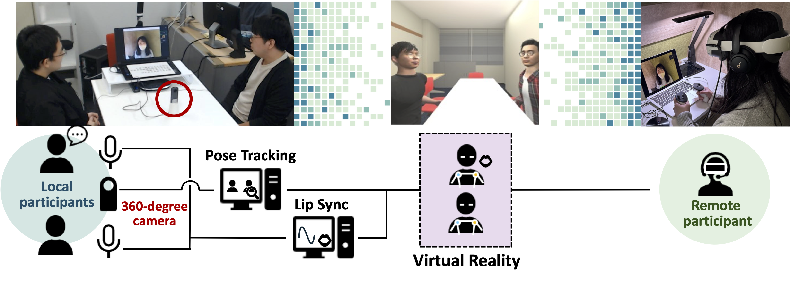

Xplore (TBA) PDF (TBA) BibTeX (TBA)

With recent advances in information and communication technologies, Hybrid meetings, where local attendees are physically present and remote participants join virtually, have become increasingly common. However, remote participants often experience reduced contextual awareness and a sense of isolation. To address these issues, we propose HybridSphere, a hybrid meeting system that reconstructs a shared virtual reality environment for remote participants. The system employs a 360-degree camera and pose estimation to generate real-time avatar representations of local attendees to allow remote users with head-mounted displays to experience the meeting as if all participants are in the same virtual space. We conducted a user study comparing HybridSphere to a baseline condition in which remote participants viewed an unmodified 360-degree video. Although the avatars were rated lower in perceived trustworthiness and likability due to limited visual fidelity, participants appreciated the seated-6DoF function. These results suggest that immersive and spatially flexible VR representations can enhance remote engagement in hybrid meetings.
@ARTICLE{11202441,
author={Momota, Koji and Shirai, Shizuka and Kobayashi, Masato and Chiba, Naoya and Ratsamee, Photchara and Kiyokawa, Kiyoshi and Uranishi, Yuki},
journal={IEEE Transactions on Visualization and Computer Graphics},
title={HybridSphere: Enhancing Hybrid Meetings with Avatar-Based VR Environments},
year={2026},
volume={},
number={},
pages={},
doi={}}